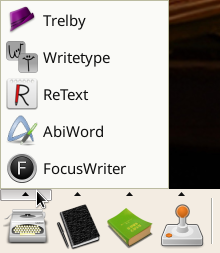
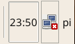
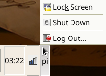

PiWrite
For full documentation visit piwrite.com.
Overview
PiWrite is a writing suite for the Raspberry Pi. It differs from the standard Raspbian Linux in the following ways:
-
It offers 26 extra writing related applications, as well as additional themes, wallpapers, and other customizations.
-
It uses a specialized configuration of the XFCE desktop environment, which offers a simpler and quicker user interface.
The Launch Panel
This is the Launch Panel:

Use this to access writing, planning and reference applications.
If you click on one of the launch icon's up-pointing arrows it will show the list of applications available under that category.

Applications
These are some of the available applications and their purpose:
- AbiWord - Word processor (similar to Microsoft Word or LibreOffice Writer)
- Calibre - eBook reading and editing
- CherryTree - Note taking (similar to Evernote)
- Focus Writer - Distraction free writing (similar to Write!, OmmWriter, WriteMonkey, etc.)
- Kabikaboo & Plume Creator - Plotting and writing (similar to Scriviner, iAWriter, Storyist, etc.)
- Red Notebook - Journal (Similar to Day One, Journey, MacJournal, etc.)
- Trelby - Scripts and Screenplays (similar to First Draft, Fade In, Scripware etc.)
- WriteType - Essay writing software for students
Web Guide
Along with these applications there are web browser based applications:

& There is a directory of writing links ...

System Tasks
Here are some of the system tasks you may want to carry out:
Internet Configuration
You can configure Internet access using the network preferences:

Utilities
You can add sticky notes to the desktop
You can view a history of text you have copied and pasted
& You can look up words in the dictionary
Shutdown & Restart
You can shutdown your Raspberry Pi, or Restart from Log Out menu.

Transfer Documents
You can transfer your documents to a USB drive

Keyboard Configuration
You can change the keyboard language

Donations
Consider helping support this project -
Links
Additional online documentation is available at -
The source code for PiWrite is on Github